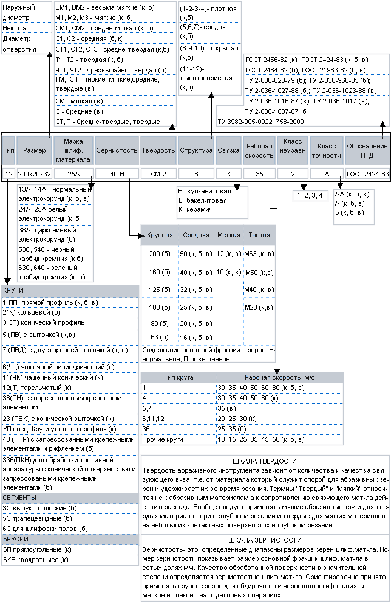
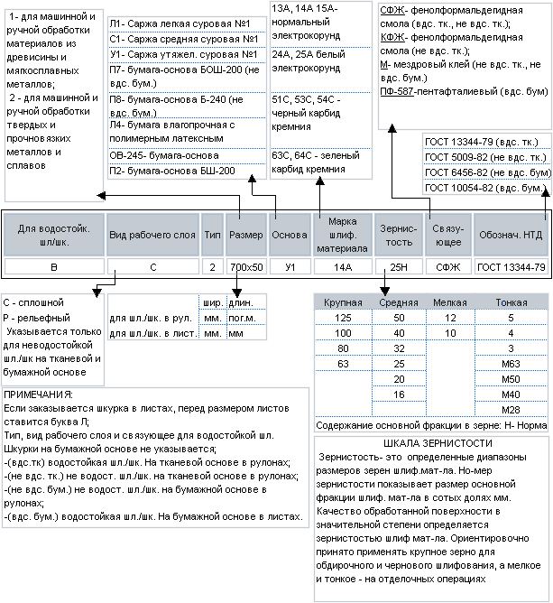

<div class="wrapper">
  <div class="nav-box">
    <a href="../../index.html" class="nav-box__link">Главная</a>
    <div class="nav-box__point"></div>
    <a href="regushi_instrument.html" class="nav-box__link">Режущий инструмент</a>
    <div class="nav-box__point"></div>
    <a href="abraziv.html" class="nav-box__link">Абразивные инструменты</a>
    <div class="nav-box__point"></div>
    Системы маркировки абразивных инструментов
  </div>
  <section class="section pages">
    <h2 class="section__title paragraph">Системы маркировки абразивных инструментов</h2>

    <!-- content section start -->

    <p class="section__content">1. Система маркировки шлифовальных кругов</p>
    <br />

    

    <br /><br />
    <p class="section__content">2. Система маркировки шлифовальной шкурки</p>
    <br />

    

    <!-- related-articles end -->
  </section>
</div>
